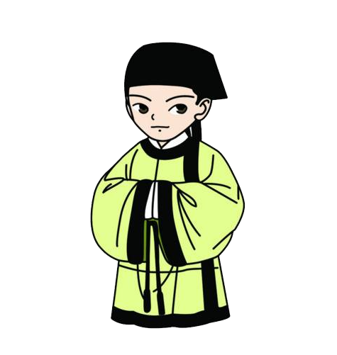

Back
独山村位于浙江省遂昌县城西南40公里处,以天马山独立于乌溪江东岸而得名。
南宋时，尚书左丞相叶梦得的曾孙叶峦视此地山奇水秀，风光独好，自邻近的浙江西南部的松阳县（今属遂昌县）古市卯山迁居于此,逐渐形成村落。明世宗嘉靖年间，叶氏后裔叶以蕃殿试中二甲十九名进士，官工部营缮司员外郎。
一个位于大山深处的小小独山村，竟然有人考中二甲一十九名进士（即当时全国科考的第22名），这是何等骄人的成绩。
叶以蕃之所以能金榜高中，这是其父叶弘渊言传身教、悉心培养的结果。
点击屏幕继续
叶弘渊从小诵读诗书，知书识礼，敦厚孝友。母亲患病，吁天以求身代。其父六十岁时，妾生下一个儿子，遭父亲不喜，叶弘渊得知，暗地里把小孩抱回抚养。
点击屏幕继续

计时
正确
错误
叶弘渊的长兄早逝，遗下一个孤儿。叶弘渊又将侄儿收留抚养，视若亲生，在叶弘渊的抚养教育下，侄子也考取了例贡。
点击屏幕继续
叶弘渊热心村中公益事业，出资捐置学田，创办家塾，邀集村中儿童读书。
点击屏幕继续
为了旌表叶弘渊的善行和培养叶以蕃成材的功德，明穆宗下旨赠封叶弘渊为“工部营缮同员外郎事主事”,并敕建牌坊
End